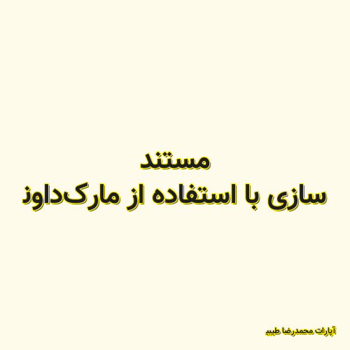

✖

مستند سازی با استفاده از مارکداون
تولید یک وب سایت استاتیک که شرح فنی پروزههای شما توش قرار بگیره! به سادگی هرچه تمام تر و بدون نیاز به دانش فنی آنچنانی.
آپارات محمدرضا طیبی 2020-03-10 23:09:00 مطالعه پست گزارش خرابی لینک / محتوای مجرمانه / تغییر محتویات لینک